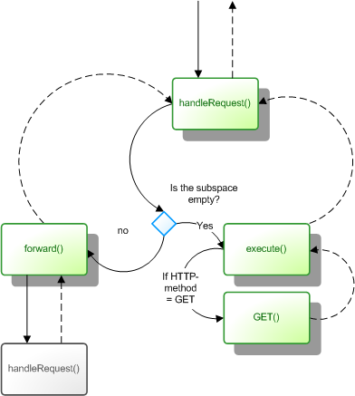

The aim of Konstrukt is to provide a solid foundation for building web applications, and the basic building block are the controllers. So what is a controller? Briefly spoken, a controller is a class, with a method on it that is invoked and as a response either returns a string or throws a http_Response.
If a string is returned, it is normal output, and should be output at the end of the script. The other possibility -- throwing of a http_Response is used for abnormal responses, such as the infamous 404 Not Found or redirects. As such, a controller is a class which does the same as a traditional PHP script. And that's the point exactly; The controller provides an encapsulated interface for writing scripts that reacts to user input.
Just like the output is well defined for a controller, so is the input. A controller gets its input from its context. To begin with, the context is a http_Request -- An object, which encapsulates the request for the script. This forms a closure over a variety of otherwise global variables, including $_GET and $_POST.
Before we look further at controllers, we'll do a bit of footwork to set up for loading libraries etc. You are quite free to bootstrap your application as you see fit, but the easiest way to get started with a new application, is to take a copy of the blank_project folder from the distribution of Konstrukt.
Assuming that your web root is at C:\wamp\www, create a new folder here, called C:\wamp\www\konstrukt and unpack the complete distribution into it. Next take a copy of the directory C:\wamp\www\konstrukt\blank_project to C:\wamp\www\konstrukt\foo for our application "foo".
blank_project is a basic setup, which contains a simple directory structure, and other things that you need to begin a web application. There are two folders in there - www which should be the web root of your site and lib which should contain the classes of your application. Once you're set up, the www folder isn't used much. The bootstrap file C:\wamp\www\konstrukt\foo\index.php takes care of dispatching to the controller layer.
You can now open your browser and go to http://localhost/konstrukt/foo/www and verify that everything is in order. The following message should meet you if everything is running correctly :
This page is intentionally left blank
This is the output of the dispatchers GET() function. You can change this by opening the file C:\wamp\www\konstrukt\foo\lib\root.php and edit the function GET().
Root, and hence referred to as the root-controller. It is somewhat analogous to a the front controller pattern, which you may or may not be familiar with.To add a new URL to your application, you should first create a new class, which extends from k_Controller, and implements GET().
Create a file with the following contents and save it as C:\wamp\www\konstrukt\foo\lib\mypage.php
class MyPage extends k_Controller { function GET() { return "Hello World"; } }
To make your newly created controller available, you have to add the URL-name as key and classname as value into the $map property of the root controller. Open up C:\wamp\www\konstrukt\foo\lib\root.php and add the following:
class Root extends k_Dispatcher { public $map = Array( 'hello' => 'MyPage' ); ...
You can now navigate to the following location:
http://localhost/konstrukt/foo/www/hello
And you should get the output from MyPage ("Hello World").

A controller begins execution when its handleRequest() method is called. Here, the URL subspace is inspected, and control is either dispatched to execute() or to forward().
While handleRequest() is the entry point of the controller, execute() is where the action happens. The standard implementation of execute() further delegates to a method corresponding to the HTTP-method of the request. In particular, GET() is the most important to consider.
The default forward() implementation is fairly static - it uses an associative array ($map) to determine the classname of the child controller.
Some times, you need a bit more dynamics into your site, than what the default forward() method offers. For example, take the following two URLs:
http://example.org/articles/how-to-get-rich-in-four-easy-steps
http://example.org/articles/learn-c-plus-plus-in-21-days
In this case, the two URLs should be handled by the same controller, but the name of the controller isn't on the URL. To implement this, you could create two controllers - one for the articles-part of the URL, and one for showing an article by its name:
First, we modify the root controller to forward /articles to our controller named Articles.
class Root extends k_Dispatcher { public $map = Array( 'articles' => 'Articles' ); }
Next, we create the controller for handling requests, which goes to /articles:
class Articles extends k_Controller { // called if the URL has any names left on the subspace // Eg. anything right of http://example.org/articles/ function forward($name) { $next = new Articles_Show($this, $name); return $next->handleRequest(); } }
The important deviance from other controller, we have seen thus far, is in the forward() method. Note how Articles_Show is used, regardless of what the name is.
Finally, the controller which handles the display of an article. The controller knows which name was used to identify it in the context (the Articles controller); this information is available in the $name property.
class Articles_Show extends k_Controller { // $this->name contains the URL "name", which the parent controller // used to forward to this one. // Eg. the name right of http://example.org/articles/ function GET() { $article = $this->registry->articles->getByName($this->name); if (!$article) { throw new k_http_Response(404); } return $this->render("templates/show-articles.tpl.php", $article); } }
For this example, we assume a model component $this->registry->articles, which has a method getByName, which retrieves an article, based on its name. We further assume a template in the location templates/show-articles.tpl.php. These are left to the readers imagination.
We can further round off the application, by implementing a GET() method on Articles and Root. These will handle the URLs /articles and / respectively.
class Articles extends k_Controller { // called if the URL http://example.org/articles is called directly function GET() { return $this->render("templates/list-articles.tpl.php"); } ...
class Root extends k_Dispatcher { // called if the URL http://example.org/ is called directly function GET() { return $this->render("templates/root.tpl.php"); } ...
Again, we'll leave the actual implementation of the templates for now.
As a side effect of the fact that controllers forwards in a hierarchy, the controllers which forwards to child controllers can decorate the output of these. Taking the running example -- If you make a slight adjustment to the Articles class, you could have it render a wrap around the Articles_Show output. This is perfect for rendering menus, navigation etc.:
class Articles extends k_Controller { // called if the URL has any names left on the subspace // Eg. anything right of http://example.org/articles/ function forward($name) { $next = new Articles_Show($this, $name); return $this->wrap($next->handleRequest()); } protected function wrap($html) { return "<div id='articles'>".$html."</div>"; } ...
While the path element of the URL is the most important part of the incoming request, there are other parameters of interest. The simplest, and commonly used is the querystring; Otherwise known as GET parameters. PHP parses these parameters and make them available in the superglobal variable $_GET. Because global variables have a tendency to make applications very messy, Konstrukt provides an encapsulation, so you don't have to use $_GET directly. Additionally, this protects you from incompatibilities with the dreaded magic_quotes setting, and translates UTF-8 encoded input data for you. To access the GET-parameters foo, you should simply use $this->GET['foo'] in your controllers. This is analogous to using $_GET['foo'], which you should never do.
Konstrukt further provides access to standard POST'ed data with $this->POST, as well as request headers in $this->HEADERS, and the less commonly used $this->FILES, $this->ENV, and $this->INPUT. The latter contains the raw content of the request, which will normally only be populated in a POST request.
Konstrukt also offers an encapsulation of session variables. Sessions are used in the following way:
class MyController { function GET() { $foo =& $this->session->get("foo"); // $foo is an array $foo['bar'] = 27; } }
Note that session->get() returns an array, and it's returned by reference. You must assign session-variables by reference, like in this example.
This stores the value 27 in the session-based array foo, under the key bar. It is important that you don't mix Konstrukts way of handling sessions with legacy mechanisms (Eg. Never use session_start and similar functions or the $_SESSION variable).
Normally, you return strings from execute() and friends, which is then echoed out to the browser, at the end of the script. These are the normal cases, and are handled with a HTTP status-code 200. There are times however, where you need to send special responses. One of the more common is a 404, which signifies that the URL doesn't exist. This is the kind of response, you would want to send in out above example, if the user requests an article, that doesn't exist. HTTP responses are implemented as exceptions. The benefit of exceptions is that they unwind the call stack, without compromising encapsulation.
Another commonly used HTTP response, is a redirect. Since this is such often used, there is a specific implementation to handle it -- k_http_Redirect. You could also use the generic k_http_Response with a status code of 303, and a Location header, the following way:
$redirect = new k_http_Response(303); $redirect->setHeader("Location", $this->url()); throw $redirect;
But this is less verbose:
throw new k_http_Redirect($this->url());
There is also a k_http_Authenticate class, for doing basic www-authentication. Other HTTP-codes have not been implemented as explicit classes, so you'll have to use the generic response, as shown above. You can find more in-depth information on the HTTP status-codes in the specification.
Another use for throwing HTTP responses, is if your application is largely a HTML application, but you need to respond to certain URLs in a different content-type. This could be file downloads, or inter-application data, such as JSON or XML. In these cases, you don't want the normal rendering stack to proceed, so instead, you'll create a specific response, and throw that.
echo(), print(), or header(). By doing so, you will break the fundamental principle behind Konstrukt.